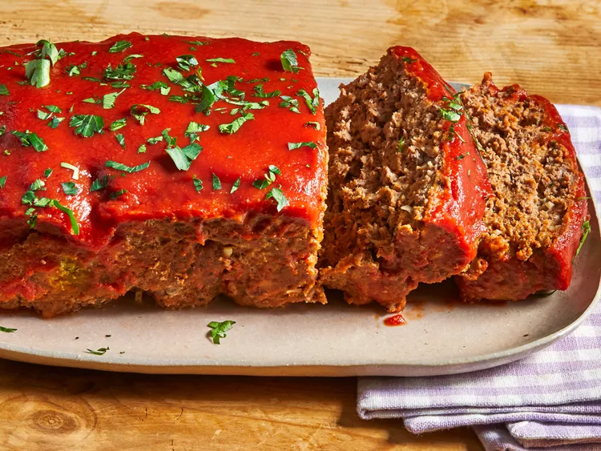

Best Meatloaf
Back to home

Description
Meatloaf is a product of ingenuity and making-do as thrifty, waste-not home cooks combine low-cost
ingredients to make a satisfying main dish that will stretch ingredients and feed a family. Yet, as a highly
customizable recipe, meatloaf can be found everywhere from classic diners to high-end restaurants, to everyday
dinner tables.
Meatloaf recipes are typically made of ground meats mixed with vegetables, seasonings, and crushed crackers or
fine breadcrumbs, and are held together with a binder; usually an egg or two. This top-rated recipe for Best
Meatloaf demonstrates how to make a meatloaf using the most simple ingredients and tried-and-tested techniques:
Ingredients
Original recipe yields 12 servings
- 1 tablespoon butter
- ¼ cup minced onion
- 2 cloves garlic, minced
- 1 ½ teaspoons salt
- 1 ½ teaspoons freshly ground black pepper
- 2 pounds extra-lean ground beef
- 3 slices bread, toasted and crumbled
- 7 buttery round crackers, crushed
- 1 egg, lightly beaten
- 3 ½ tablespoons sour cream
- 1 ½ tablespoons Worcestershire sauce
- 1 (15 ounce) can tomato sauce, divided
- ¼ cup milk, or as needed (Optional)
- 3 tablespoons ketchup
Steps
- Preheat the oven to 350 degrees F (175 degrees C). Gather all ingredients.
- Melt butter in a skillet over medium heat, and cook onion and garlic until onion is soft and translucent,
about 5 minutes. Remove from heat, and season with salt and pepper.
- Combine onion and garlic mixture, beef, crumbled bread, crushed crackers, egg, sour cream, Worcestershire
sauce, and 1/2 can tomato sauce in a large bowl. Mix until well combined. Gradually stir in milk, 1 teaspoon
at a time, until mixture is moist, but not soggy.
- Transfer the mixture to a 5x9-inch loaf pan.
- Bake uncovered in the preheated oven for 40 minutes. Increase oven temperature to 400 degrees F (200 degrees
C). Continue baking 15 minutes, to an internal temperature of 160 degrees F (70 degrees C).
- Mix the remaining tomato sauce and ketchup in a small bowl. Pour over the top of the meatloaf, and continue
baking for 10 minutes.
- Serve hot and enjoy!